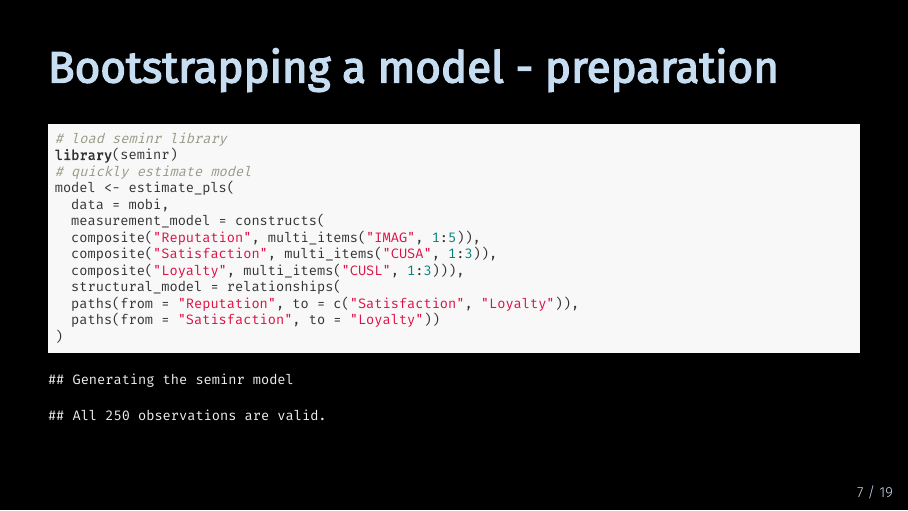
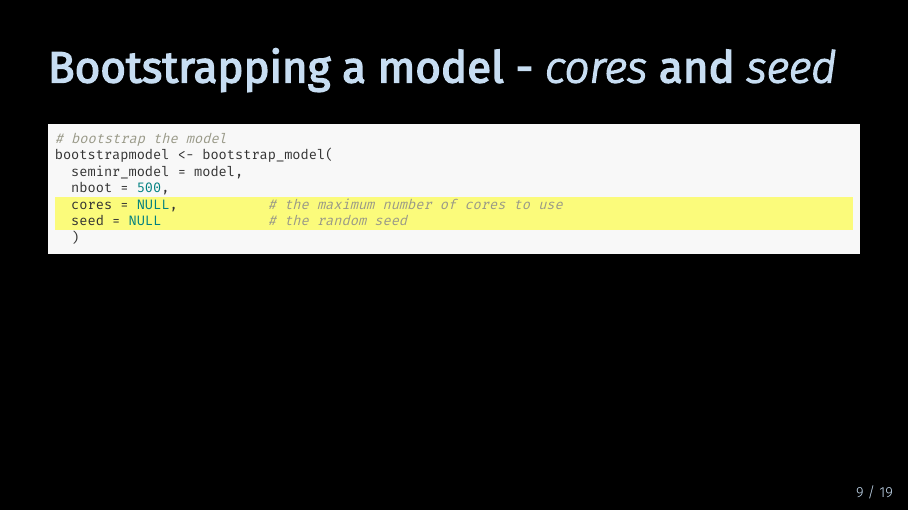
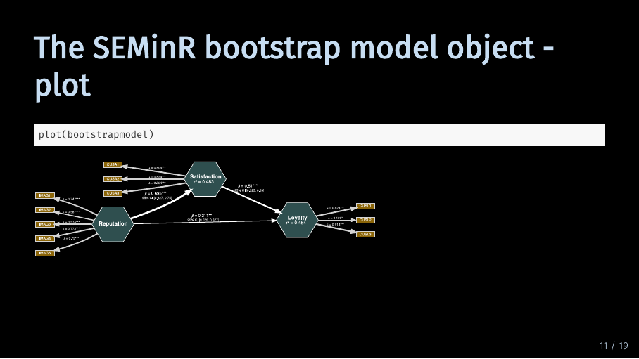
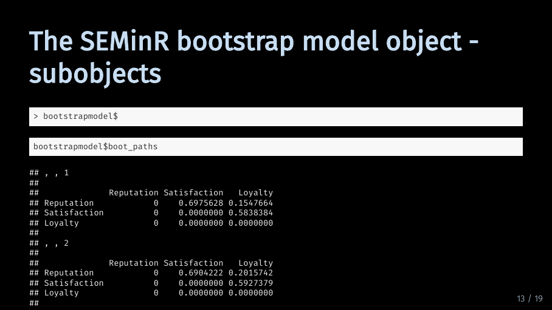
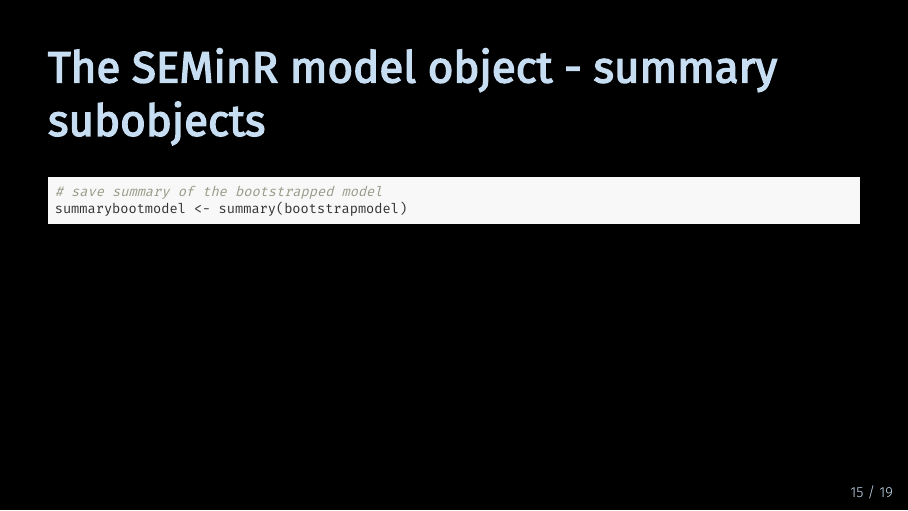
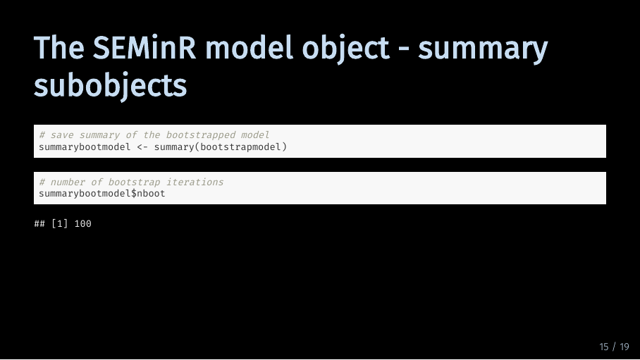

Under construction.
Under construction.
You can download the slides in this presentation here.
Here, you can find the slides from the video. Under each slide you can find the script for that slide.
Hello and welcome to this Video: Bootstrapping a PLS-SEM
The slides in this presentation were created by: Lilian Kojan
After watching the previous videos, you now know how to prepare your data and how to specify and estimate a model. The next step is bootstrapping that model for significance.
Bootstrapping means that your model is re-estimated a large number of times using different parts of your data. You can then analyse and compare the results from the different estimations. This gives you information about how likely your original model results are given your data. Specifically, from the results, SEMinR automatically construct confidence intervals and calculate t-values for all values in your model. That means path coefficients, but also weights, loadings and HTMT values.
Note that this doesn’t say anything about how likely it is to replicate your model results in the general population. It only says how likely you are to get your model results given your data. To better understand that, let’s take a closer look at the process of bootstrapping.
To understand the bootstrapping process, let’s first take a step back. For the regular model estimation, the PLS algorithm considers your full data set.
In the process of bootstrapping, the model is estimated multiple times. But instead of using the full dataset, the algorithm uses a random sample of that data. For each bootstrap iteration, the model is estimated with a different slice of your data. In this example, there are three iterations and therefore three slices of data. A more realistic number of iterations is 500.
Now that you have many different model results, you can use the summary() function to obtain statistics about the different results. seminr will then give you means, standard deviation, confidence intervals and t statistics based on the different model results. This is what I mean when I talk about significance information given the data. Now that we have talked how bootstrapping works, let’s take a look at how we do it in seminr.
 I will use the same model as in the model estimation tutorial. We use the mobi dataset again, and specify the measurement model and structural model directly in the estimate_pls() function.
Now, we can take that model and bootstrap it. As you can see, the bootstrap_model() function takes four arguments. Let’s start of with the first two arguments. For seminr_model, you of course provide the model you want to bootstrap. This needs to be a model object which is generated by the estimate_pls() function. It is also the only argument you must provide to the function for it to run. All other arguments are optional. In the second argument, you specify the number of bootstrap iterations. If you don’t specify a number, the function defaults to 500. Model bootstrapping takes a lot of resources, so this is fine for testing out different models. If you want to publish your model results, the recommended number of bootstrap iterations is 5000.

The next two arguments are cores and seed. For the argument cores, you can specify the maximum number of cores R may use to bootstrap your model. By default, bootstrap_model() will use all available cores. Lastly, you can specify a seed. This is a number that will be used to initialize a pseudorandom number generator which is used for the function. If you provide a seed, others can reproduce your results exactly because the pseudorandom number generator will give them the same number sequence. By default, the value is NULL.
Now that we have talked through the code, I will actually bootstrap our model. To save computing time, I have set the number of bootstrap iterations to 100. And as you can see, the model was successfully bootstrapped. Next, let’s look at what we can do with the bootstrapped model object.

Just like with the model object, we can of course also plot the bootstrapped model. Compared to the plot of the regular model, there are two additions: First, all path coefficients as well as loadings and weights have asterisks that show significance. Second, there are confidence intervals for the path coefficients.
??? Let’s take a closer look.
The asterisks indicate the p level of significance. The p value is calculated based on the t value from the bootstrapping procedure and the degrees of freedom which are equal to the number of observations you have in your data set. As is common practice, three asterisks indicate a p which is smaller than .001. Two asterisks indicate a p which is smaller than .01 and one asterisk indicates a p which is smaller than .05.
The 95 % confidence interval tells you the interval in which 95 % of the bootstrap model results for the path coefficient fall. The first value is the lower bound. 2.5 % of the bootstrap result values is smaller than this lower bound. And the second value is the upper bound, meaning that 2.5 % of results are larger than this bound. This gives you more information on how likely it is to get your model results, given the data.
As with the pls model object, the bootstrapped model object also contains a lot of subobjects. If you type in bootstrapmodel with a dollar sign, you get an overview of the information and objects stored in the bootstrapped model object. Some of that information is simply inherited from the model object, other information is generated in the bootstrapping process.

However, if you call that information directly from the bootstrap model object, it will give you the results for each bootstrapping iteration. For example, this means there are 100 entries if we want to look at the results for the path coefficients alone.
Thankfully, the summary function again gives us a concise overview of the bootstrap results. But in comparison to the pls model summary, executing the summary function on a bootstrapped model gives us a lot more information. Too much information, again, to fit on this slide.

So let’s store the summary in a object again and look at the different parts. The summary of the bootstrapped model contains six objects which are interesting to us:
 First, we can again look up how many times the model was bootstrapped.
But we are probably more interested in the results of the bootstrapping procedure. Let’s look at the results for the path coefficients. All boostrap results are formatted as a table. In the first column, you can see the original estimate for the path coefficient. The second and third column show the mean and standard deviation of the distribution of all path coefficients calculated during bootstrapping. The fourth column contains the t statistic which is an indication of significance. As the underlying t-test is two-tailed, a t statistic of at least 1.65 indicates a significance level of 10 %. The last to columns contain the lower and upper bound of the 95 % confidence interval.
Next up is evaluating your model.